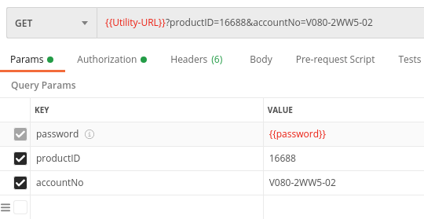
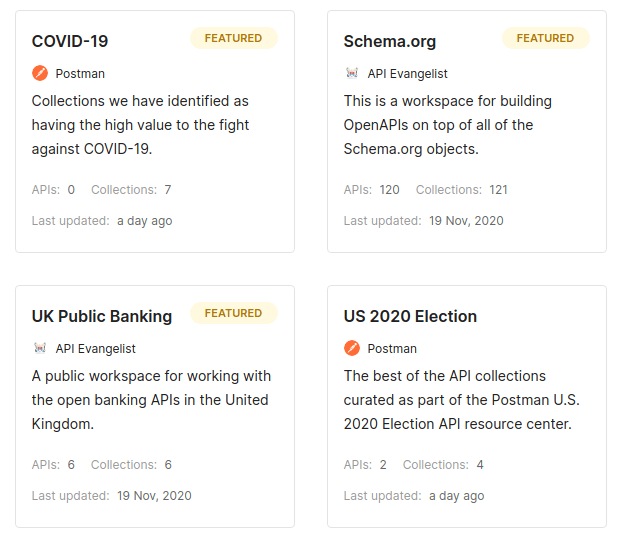

Let's say you're working with someone's API and you need to test a few different requests and dig through the responses. Wouldn't it be nice if you didn't have to write a script to cURL it and parse the response so that it was readable? Wouldn't it be nice if all of the responses were already formatted and readable, and you could convert them to other formats with the click of a button? Let's say there are multiple enpoints you are trying to hit. Wouldn't it be nice if you could store off the endpoints and load them into your request as needed? And what about authorization? Wouldn't it be great if you could securely store API keys and load them into the requests as needed too? Maybe like this:
Well, I can tell you from experience that it is nice. All of this is very nice. Postman makes all of this very easy and nice.
In fact, everything I just described is really only the basics of what Postman has to offer. If you are building an API or just need to access someone else's API, Postman gives you a very nice toolbox. It will speed up your process and make everything less error-prone. But Postman has been quickly developing a lot of auxiliary tools to their API platform.
Actually, the "Postman Galaxy" seems to be exploding with useful tools. I have only worked with Postman at the basic level of building and testing APIs, but they have tools for generating documentation, developing automated testing suites, and even implementing automated API monitoring.
One of the most interesting products Postman has developed is their API Network. This platform allows you to publish your API to a network where it can be shared with and discovered by...anyone! The discoverability that this platform introduces is thrilling. I really enjoy browsing this network to find interesting projects, get ideas for my own projects, and just expose myself to more of what's going on in the development world. They also curate collections of interest to the community. Here's a small sampling of their featured collections at the time of writing:
Don't you want to investigate? If you use Postman but you've never explored their API network, I recommend you check it out.
Postman has quite a few product levels for individuals and organizations ready to pay for extras. But even at the free tier it gives you some great features, like converting your request into code across a ton of common languages. I think it's so cool that I can form my request, plug in whatever headers and variables I am using, and then with one click generate some ruby Net::HTTP code that I can just drop into my codebase. Damn! I promise, even if you just get familiar with Postman at a basic level, it will prove to be an essential development tool for you. Thanks for reading!